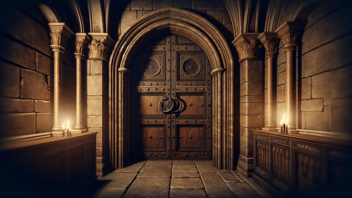

The stone chamber shudders as armor and steel fill the corridors. You press yourself against the wall and hear the enemy close.
Theme
Act I

The stone chamber shudders as armor and steel fill the corridors. You press yourself against the wall and hear the enemy close.